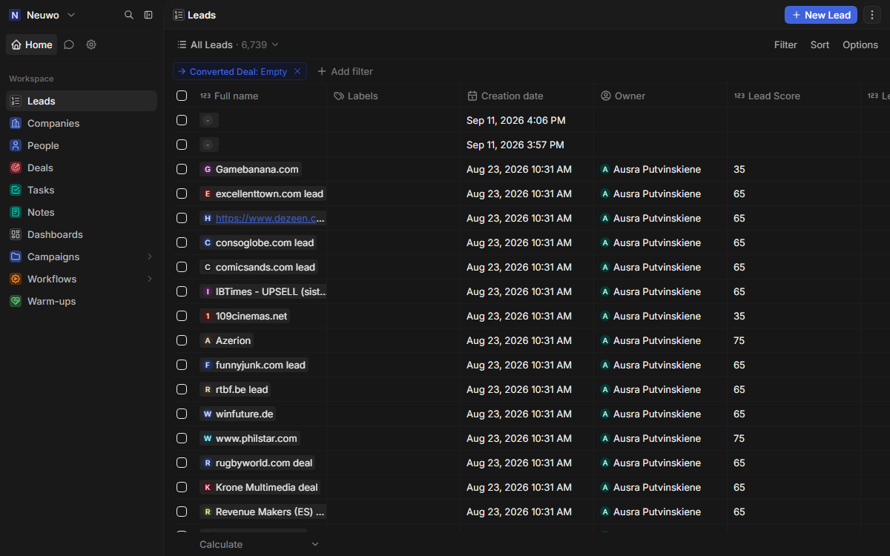
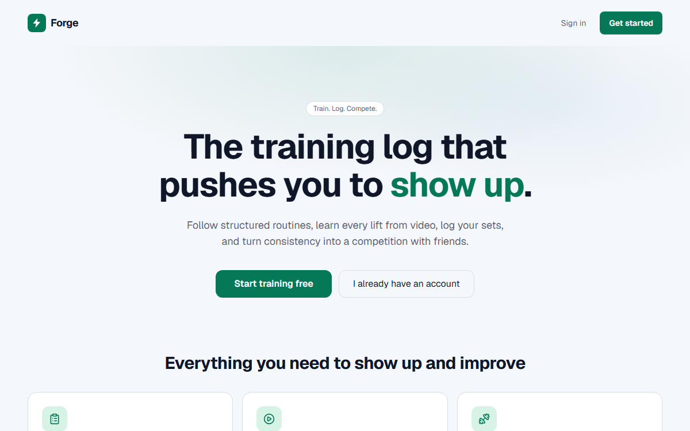
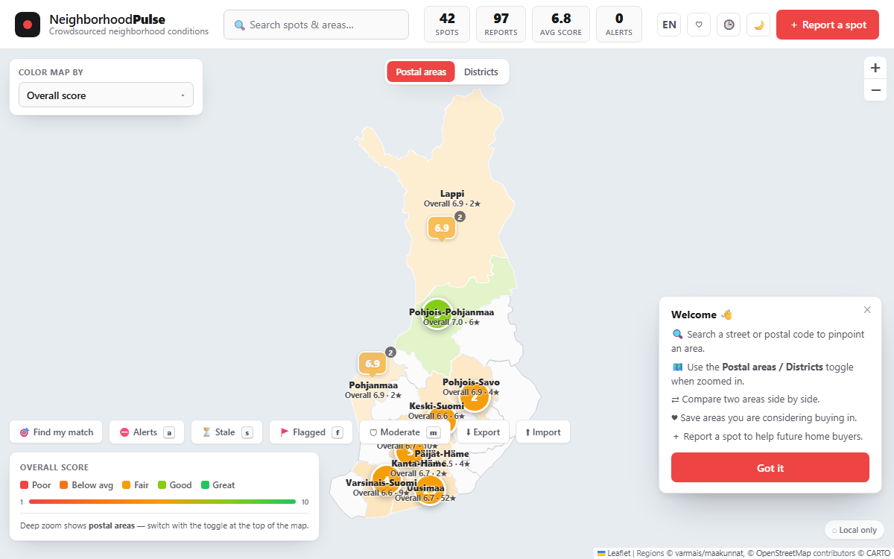
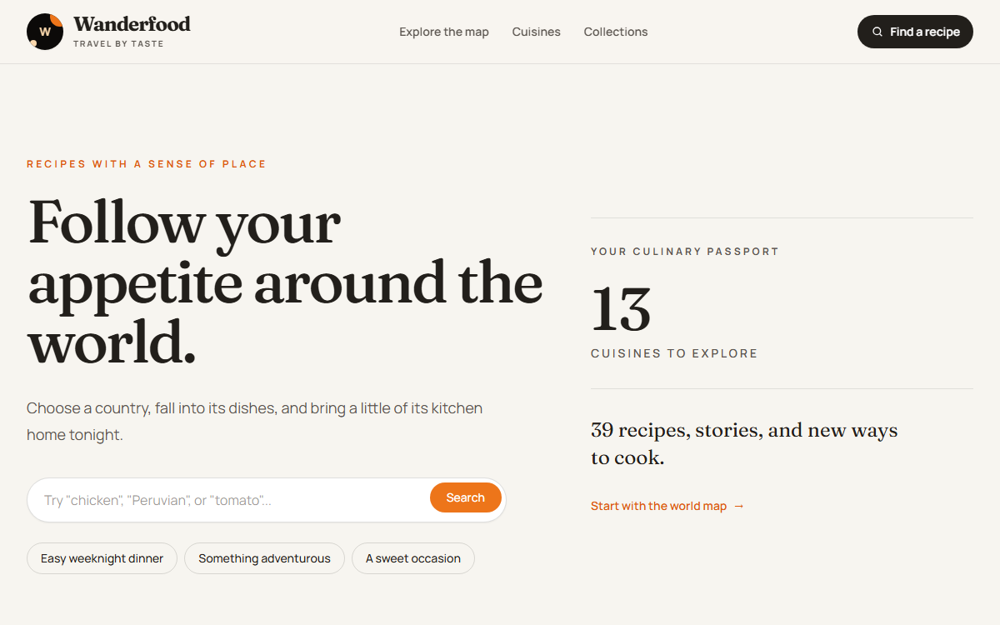
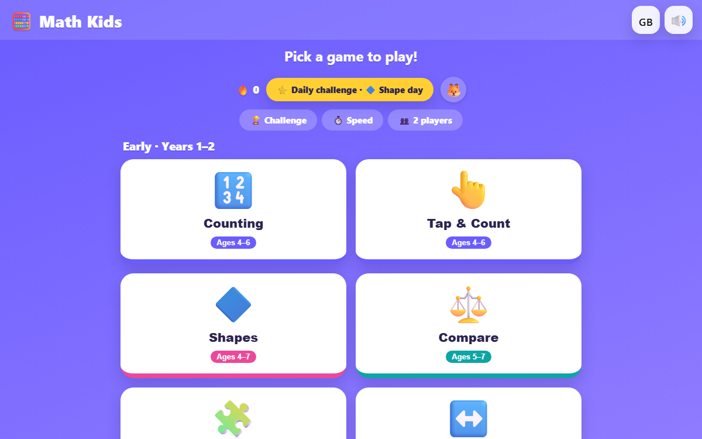

-
Business Development Manager
May 2026 – PresentNeuwo, Helsinki, Finland- Own publisher acquisition and monetization as an end-to-end process, from market mapping and outreach to GAM / header-bidding integration and revenue optimization
- Spot and remove manual handoffs and duplicate data entry across sales, AdOps and technical teams as onboarding volume scales
- Advise publishers on revenue optimization (CPM uplift, fill-rate and ad-layout performance) and translate findings into concrete change requests for the systems involved
- Built an internal Chrome extension that lets AdOps prototype IAB ad placements on live pages and capture production-ready CSS selectors, shortening placement review cycles
- Coordinate with AdOps, product and programmatic teams to keep integrations, workflows and data consistent across desktop and mobile
-
Junior Business Development Manager
Feb 2024 – Feb 2026Kiosked AB Oy, Helsinki Metropolitan Area- Generated €500K+ in incremental revenue through new business and partner expansion
- Launched the Spain and LATAM markets, building a new regional pipeline from zero
- Onboarded 50+ publishers, scaling available inventory and demand
- Ran full sales cycles — outreach, qualification, pitching, negotiation and onboarding
- Worked with AdOps and technical teams to debug integration issues (async widget rendering, embed anchoring) and keep delivery reliable
-
Research Trainee (Computer Vision)
Jun 2022 – Jun 2023Haaga-Helia University of Applied Sciences, Helsinki, Finland- Conducted applied Computer Vision and Machine Learning research on human expression recognition
- Developed and benchmarked CNN architectures using TensorFlow, PyTorch, YOLO and OpenCV
- Built reproducible data pipelines for preprocessing, training and evaluation
- Co-authored an IEEE research paper on CNN architecture design and evaluation methodology (arXiv:2311.02910)
-
Sales Manager, Spain & Latin America
Oct 2018 – Feb 2019ZenTreasury, Helsinki Area, Finland- Opened and developed the Spain and LATAM markets from scratch, combining sales execution with localization strategy
- Adapted and localized marketing materials, website content and product interfaces for regional markets
- Executed B2B sales and partnership development and built the initial pipeline
-
CRM & Logistics Development
Sep 2018 – Dec 2018Eckerö Line, Helsinki Area, Finland- Researched and homologated client data to support the rollout of a new CRM (SuperOffice), giving sales a 360° view of each customer
- Defined requirements from customer-behavior analysis and evaluated CRM options against operational needs
- Contributed to system design focused on customer segmentation and demand forecasting
- Aligned CRM capabilities with operational and logistics workflows
-
Logistics Chief
May 2013 – Oct 2017SIEMBRA ALTA S.A.C., Lima, Peru- Managed end-to-end logistics for international agricultural exports across the USA, Spain, France, UK, Netherlands and Russia
- Increased export capacity from 25 to 80 containers per season (+220%)
- Coordinated shipping lines, freight forwarders, suppliers and international clients; oversaw documentation, billing and compliance
- Ran inventory, ERP/CRM and supply-chain tracking (Kardex)
-
Account Manager
Nov 2015 – Feb 2016Panasonic, Lima, Peru- Managed growth and operations for the Panasonic Lighting product line
- Led B2B sales, forecasting and import planning; supervised a team of 12
- Oversaw inventory, ERP/MRP systems and payroll operations
-
Sales Assistant
May 2012 – May 2013Lab Nutrition Corp S.A.C, Santa Anita, Lima, Peru- Increased monthly sales from $10K to $40K (+400%) and grew the customer base by 50%+
- Managed inventory of 250+ SKUs using ERP (Navasoft) and ran client retention follow-ups
- Trained sales staff across multiple locations
Gianmarco I. Tutuianu
Business Systems & Process Automation | CRM · Integrations · Data · Applied AI
Business systems and process professional with 10+ years across international business, operations and programmatic technology. I map how work actually flows across systems, turn messy multi-owner processes into clear, buildable requirements, and then build the automations and integrations that make them stick — from CRM migrations and data pipelines to bespoke internal tooling. Equally comfortable in a negotiation and in a code editor, I bridge business stakeholders and technical teams instead of handing work over the fence.
€500K+ new revenue generated; 50+ partners onboarded; +220% export capacity growth; 10+ yrs business, operations & tech.
Experience
Selected work
-

Twenty CRM Migration
Python, Docker, REST APIs, PostgreSQL, Redis, Twenty CRMSelf-hosted, customized Twenty CRM built from a custom Docker image and docker-compose stack, paired with Python scripts that clean, de-duplicate and migrate Pipedrive data through the REST API.
- Cleaned and de-duplicated Pipedrive exports and mapped them into Twenty records
- Idempotent upserts via the REST API with dry-run mode and retry/backoff handling
- Reproducible local stack (Postgres + Redis + Twenty) via docker-compose
-

Forge — Training Platform
Next.js, React, TypeScript, Supabase, Expo, DockerFull-stack strength-training platform (web + Android) for logging workouts, following multi-week programs and coach/athlete collaboration, backed by Supabase with 97 SQL migrations.
- Shared backend across a Next.js web client and an Expo/React Native Android app
- Dockerized local Supabase stack to validate every migration before production
- Workout logging, program engine, leaderboards and a coach console
-
Neuwo AI Creative Engine
Python, Ollama, ComfyUI, FastAPI, Streamlit, SDXL, DockerLocal-first advertising creative engine that plans, generates, validates and exports ad creatives using local LLMs and image models, with claim-grounding, legibility and brand-safety checks.
- Fuses advertiser briefs with publisher page context to plan concepts and copy
- Deterministic Pillow rendering for headlines, CTAs and brand elements
- Exports contact sheets, HTML5 clicktags, animated GIF/MP4 and ad-server bundles
-
Ad Unit Analyzer
Node.js, Express, Playwright, SSE, docxPlaywright-based auditor that crawls a publisher's site on desktop and mobile, detects existing ad units and placements, and produces client-ready HTML, PDF and Word recommendation reports.
- Detects GPT/Prebid/TAM slots and classifies placements geometrically
- Parses ads.txt to map the supply chain and prioritise recommendations
- Served through a web UI with a live SSE progress stream
-
Ad Unit Placer — Chrome Extension
Chrome Manifest V3, JavaScript, Shadow DOM, chrome.storageManifest V3 Chrome extension used by AdOps to prototype IAB ad placements on live pages and capture the production CSS selector, with creatives isolated in Shadow DOM to resist publisher CSS.
- Insert standard IAB units, sticky bars, rails and interstitials above or below any element
- Copies the generated selector that feeds the production monetization script
- Persists units per URL across refreshes
-

NeighborhoodPulse
React, TypeScript, Vite, Leaflet, Node.js, PWACommunity-driven, multilingual interactive map for crowdsourcing and comparing neighbourhood conditions across Finland, combining Leaflet maps with sourced municipal statistics.
- Anonymous ratings for safety, noise, cleanliness and vibe with recency-weighted scoring
- Choropleth overlays for crime, demographics and OpenStreetMap amenities
- PWA with offline support, translated into English, Suomi and Svenska
-

Wanderfood
Next.js, TypeScript, Supabase, Tailwind CSS, Playwright, VercelWorld-cuisine recipe discovery platform with accounts, favourites, editorial admin tools and a strong SEO/observability setup, built on Next.js and Supabase with RLS.
- Row-level-secured public data with offline seed fallback
- Editorial admin area with scheduled publishing
- End-to-end Playwright tests and Lighthouse performance budgets
-

Math Kids
JavaScript, PWA, Capacitor, Web Speech API, Web AudioOffline-first primary-school maths game (27 activities, ages 4–12) shipped as an installable PWA and Android app, with adaptive difficulty and per-skill mastery tracking.
- Anti-repetition and weak-fact resurfacing engines to keep learners in a challenge zone
- Spaced-review mastery, stickers, achievements and multi-profile support
- Full English/Finnish/Spanish text and spoken audio
Skills
Business Applications & Process
Process Mapping & Design, Business Analysis, Requirements Definition, Workflow Automation, Systems Integration, Change Management, Stakeholder Management, Project & Program Management, Agile & Scrum, Jira
CRM & Business Systems
Salesforce (Certified Administrator), Pipedrive, Twenty CRM, Google Ad Manager (GAM), Equativ, SuperOffice, SAP ERP, MRP Systems, Navasoft ERP, Data Migration, REST APIs
Data & Engineering
Python, SQL / MySQL, TypeScript, JavaScript, HTML / CSS, Docker, Playwright, Excel / VBA, Power BI, AWS, Git
AI & Machine Learning
LLMs (local & API), Retrieval & Grounding, Computer Vision, TensorFlow / Keras, PyTorch, OpenCV, YOLO, Ollama, ComfyUI
Commercial & Operations
Business Development, Revenue & Profit Growth, Negotiation, Market Expansion, International Trade, Logistics & Supply Chain, Localization, Programmatic Advertising, Google Workspace
Education
Bachelor of Business Administration (BBA), Business Administration & ICT — AI specialization
Bachelor of International Business & Logistics, International Trade & Operations
Business Lead 2018, Business strategy, finance and leadership
Certifications
Salesforce Certified Administrator
AWS re/Start Graduate
Google IT Automation with Python
Business Lead 2018
Haaga-Helia PRO
Rugby Coach (15s)
Languages
Spanish
English
Finnish
Portuguese